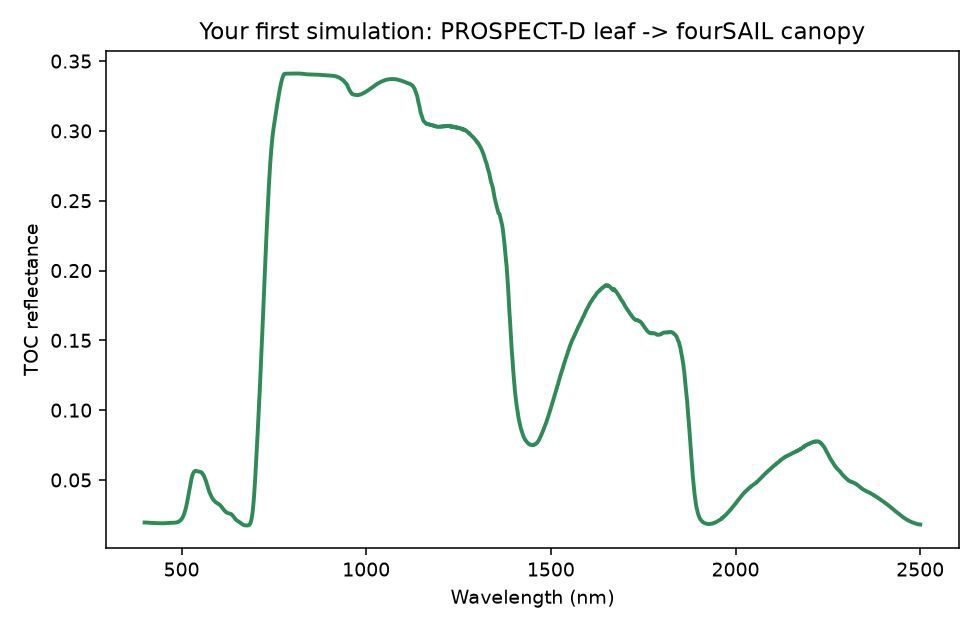

01. Getting Started
What you will learn
Install and import
toolsrtm.Run the simplest scientifically meaningful RTM simulation: a leaf model feeding a canopy model.
Plot the result.
Understand exactly what the returned objects contain.
Concept
Every simulation on this site follows the same two-step shape: a leaf
model turns leaf traits (pigments, water, dry matter) into a
reflectance/transmittance spectrum, and a canopy model turns that
leaf spectrum plus canopy structure (leaf area, leaf angle, viewing
geometry) into a top-of-canopy (TOC) reflectance spectrum – what a
sensor above the canopy would see. This chapter runs that chain once,
end to end, with prospect_d() (PROSPECT-D) and
foursail() (fourSAIL) – the two most widely used
models in the package, and the baseline every later chapter builds on.
Python tools used
Function |
What it does |
|---|---|
Leaf reflectance/transmittance from pigment/water/dry-matter
traits. Returns a |
|
Canopy top-of-canopy BRDF from leaf optics + canopy structure +
soil background. Takes a trait dict, a soil reflectance array,
and |
Run the example
import numpy as np
from toolsrtm import prospect_d, foursail
# 1. Leaf optics: pigments, water, dry matter, leaf structure
leaf = prospect_d(N=1.5, Cab=40, Car=8, Anth=1, Cbrown=0, EWT=0.01, LMA=0.009, alpha=40)
print(leaf.refl.shape, leaf.refl[150]) # reflectance at 550nm
# 2. Canopy: same leaf traits + structure + geometry + soil background
inputLUT = dict(
N=1.5, Cab=40, Car=8, Anth=1, Cbrown=0, EWT=0.01, LMA=0.009, alpha=40,
LIDFa=-0.35, LIDFb=-0.15, TypeLidf=1, # leaf angle distribution (spherical)
LAI=3, hspot=0.01, tts=30, tto=0, psi=0, # leaf area, hot-spot, sun/view geometry
)
rsoil = np.full(2101, 0.15) # flat soil background, 400-2500nm
sail = foursail(inputLUT, rsoil, leaf_model="PROSPECT-D", spectrum_all=True)
print(sail.rsot.shape, sail.rsot[150]) # TOC reflectance at 550nm
import matplotlib.pyplot as plt
wl = np.arange(400, 2501)
plt.plot(wl, sail.rsot)
plt.xlabel("Wavelength (nm)"); plt.ylabel("TOC reflectance")
plt.title("Your first simulation: PROSPECT-D leaf -> fourSAIL canopy")
Result
{kind=link}

Real output of the code above.
Printed output (your own run will match exactly – both calls are deterministic, no random seed involved):
(2101,) 0.13359835005159199 # leaf.refl[150], leaf reflectance at 550nm
(2101,) 0.05584955522593193 # sail.rsot[150], TOC reflectance at 550nm
Interpretation
The curve has the classic vegetation shape: low reflectance in the visible (400-700nm, chlorophyll absorption, with a small local “green peak” around 550nm – exactly where we just sampled), a sharp rise at the “red edge” (~700-750nm), a high, fairly flat NIR plateau (750-1300nm, multiple scattering between leaf layers – the reason healthy vegetation looks so bright in the near-infrared), and two SWIR water-absorption dips (~1450nm, ~1940nm).
The leaf-level (0.134) and canopy-level (0.056) values at 550nm are
not close, and that gap is itself informative: the green peak is a
sharp, narrow leaf-level feature, and at a canopy scale it gets diluted
by everything a single leaf spectrum doesn’t capture – the soil
background showing through gaps between leaves, shading between leaf
layers, and the sun/view geometry (tts=30, tto=0) all pull the
canopy-level value down from the pure single-leaf value. A leaf
spectrum is not a scaled-down canopy spectrum; that’s exactly why a
separate canopy model exists. Chapter 04 makes the soil/LAI side of
that gap an explicit experiment.
Try it yourself
Set
rsoilto a much darker (0.03) or brighter (0.30) flat value and see how much the visible/SWIR bands shift.Change
Cabfrom 40 to 10 (stressed/senescent) or 70 (very healthy) and watch the visible/red-edge region respond.Set
LAIto0.3(sparse canopy) and compare against theLAI=3result – the canopy value should move much closer to the bare-soil value.
Common mistakes
rsoilmust be a 2101-element array (400-2500nm, 1nm step) matching the leaf/canopy wavelength grid – a scalar or wrong-length array will error or silently broadcast incorrectly.leaf_model="PROSPECT-D"insidefoursail()re-runs the leaf model internally from the sameinputLUTdict – the separateprospect_d()call above is only there to show the leaf-level step explicitly;foursail()alone is enough for a normal simulation.Angles (
tts,tto,psi, andLIDFaunderTypeLidf=2) are in degrees, not radians.
Next
02. Parameters & Traits – what every trait above (N, Cab,
LIDFa, …) actually means, its unit, and its realistic range.
Using R? -> ToolsRTM Tutorial 01: Getting Started